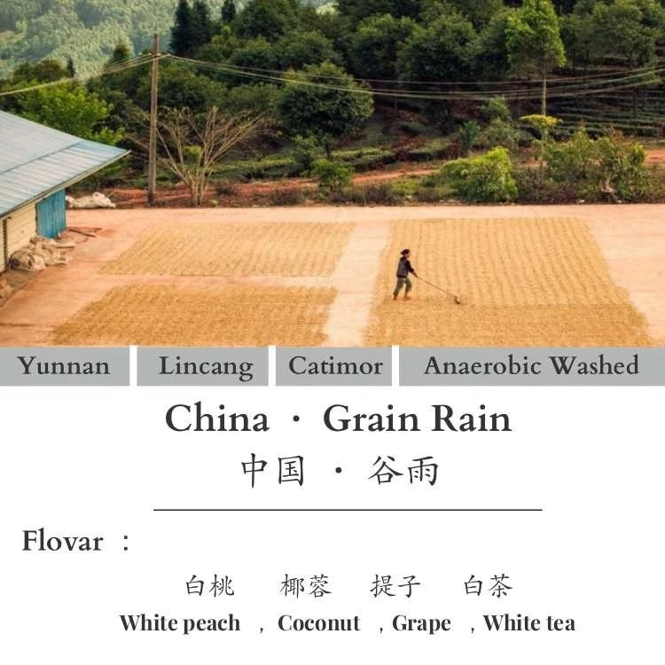
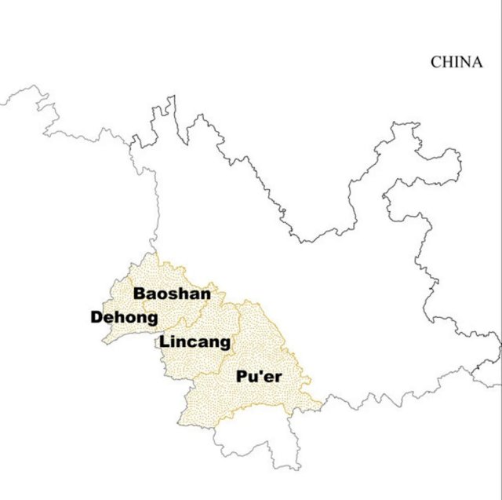
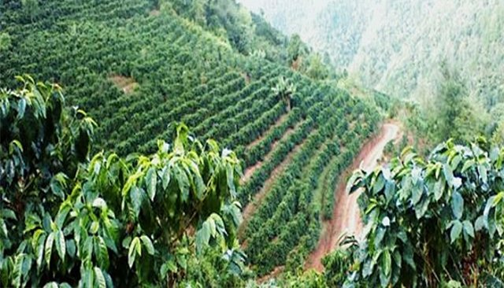
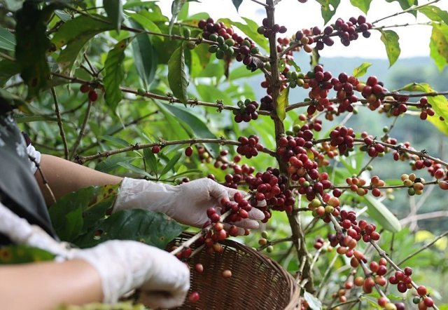
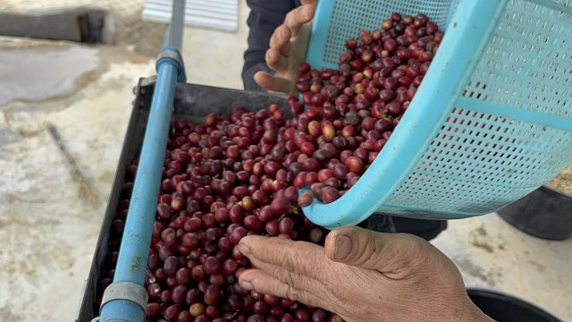
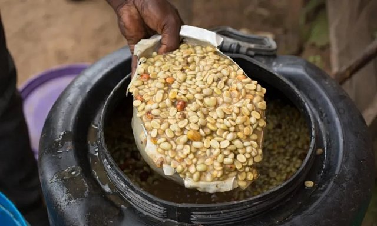

产地介绍
临沧与沧源
临沧位于云南西南部，地处澜沧江与怒江之间。这里山地起伏、光照充足，干湿季分明。桃白的供方资料标注来自临沧沧源周边小农，海拔1550米。
谷雨契作批次
中国云南临沧沧源，由周边小农生产，品种为卡蒂姆，种植海拔1550米，土壤为粘土壤；资料所列采摘期为10月至次年3月。
酵母增味厌氧水洗
鲜果采摘当天送抵处理站，经浮选后用机器脱去果皮、果肉，再将咖啡豆放入200升塑料密封桶。供方介绍，在纯净水中激发酵母，加入发酵后的咖啡果皮黏液，再倒入桶中厌氧发酵150小时，随后移至棚架日晒干燥。
查看6张供方随附参考图 6 张
供方随附参考图，拍摄地点与时间未注明。












风味记录
供方杯测记录干香白桃，提子，椰蓉
湿香白桃，芒果，西梅
啜吸入口是细腻软糯的成熟白桃香气，接着是提子，黄桃，芒果，轻微的荔枝酸甜感，中后段是椰蓉曲奇饼，梅干，尾韵淡淡白茶香
以上为供方参考杯测记录，属于风味联想，感受会随冲煮条件与个人经验变化。
冲煮参考
供方参考配方水温80℃
咖啡粉20g
总水量330g
粉水比1:16.5
- 研磨
- Ultra 13格
- 滤杯
- V60-01
- 用水
- 弱碱性过滤水
总萃取时长：2分钟内
断水次数：3次断水
供方参考配方。研磨刻度仅对应所列机型，可按器具、流速和口味调整。
豆子资料
- 国家与产区
- 中国 · 云南 · 临沧 · 沧源
- 来源批次
- 谷雨契作批次
- 生产者
- 周边小农
- 品种
- 卡蒂姆
- 种植海拔
- 1550m
- 土壤
- 粘土壤
- 采摘期
- 10月至次年3月
- 处理方式
- 酵母增味厌氧水洗
- 烘焙度
- 本批未提供
关于增味处理
本款为增味处理。供方处理介绍涉及酵母与发酵后的咖啡果皮黏液；白桃、提子、椰蓉等为风味联想，不是配料表。
烘焙记录
- 烘焙机
- 必德利6kg
- 烘焙量
- 1.5kg
- Agtron
- 豆色 70 / 粉色 105
以上为供方参考批次记录，当前烘焙安排以下单确认信息为准。
规格、包装与保存
100g¥79
227g¥155
454g¥279
可选100g、227g、454g。454g采用227g×2包装。需要研磨时，请说明使用器具并确认研磨选项。
收货后请密封、避光保存。当前批次、库存及发货安排，以订单确认信息为准。
同一顾客、同一收货地址的一单，优惠后商品实付满188元顺丰包邮，偏远地区按实际规则确认。下单前确认发货安排与运费。